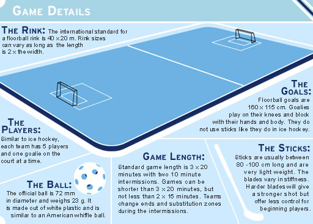

Il floorball, chiamato anche unihockey, è uno sport di squadra praticato ufficialmente in più di 80 nazioni; specialmente in Nord-Europa, Asia e Nord-America. Il floorball è una versione indoor dell'hockey su ghiaccio, giocato però con una palla leggera e una stecca di plastica e senza né pattini né protezioni. È uno sport divertente e veloce, che richiede una grande abilità tecnica e una buona forma fisica.
Il floorball ha origini relativamente recenti, risalenti agli anni '70 del secolo scorso, quando alcuni giocatori di hockey su ghiaccio svedesi decisero di praticare il loro sport preferito anche al chiuso, durante l'inverno. Per farlo, utilizzarono dei bastoni da hockey in plastica e una pallina al posto del tradizionale puck in gomma. Così nacque l'Unihockey, che in seguito si diffuse in tutta Europa.
Nel 1986, il nome del gioco venne cambiato in “floorball„ e venne fondata e l'IFF (International Floorball Federation) collo scopo di promuovere e sviluppare il gioco in tutto il mondo. Oggi, il floorball è uno sport popolare in molti paesi europei, come Svezia, Finlandia, Svizzera, Repubblica Ceca e Norvegia, ma è in crescita anche in Asia e in Nord-America.
Il floorball ha le sue origini nell'hockey su ghiaccio, ma ha alcune caratteristiche uniche che lo distinguono dal suo “fratello maggiore„.
In primo luogo, il floorball si gioca al chiuso su una superficie piana e senza ghiaccio, con un campo di gioco di dimensioni ridotte rispetto all'hockey su ghiaccio.
In secondo luogo, la palla è leggera e in plastica, al posto del puck in gomma dell'hockey su ghiaccio.
In terzo luogo, i giocatori indossano scarpe da ginnastica o scarpe speciali da floorball, invece dei pattini da hockey su ghiaccio.
Infine, si caratterizza per essere uno sport molto meno violento del suo “fratello maggiore„.
Il floorball è uno sport veloce, divertente e adatto a giocatori di tutte le età e livelli di abilità. In campo è necessaria una combinazione di velocità, agilità e abilità e conoscenza delle tattiche di gioco. Gli atleti che praticano questo sport devono essere in grado di muoversi rapidamente sul campo, cambiare direzione e velocità in modo rapido e avere un buon controllo della palla. Inoltre, il floorball è uno sport che si gioca in squadra, il che significa che è importante avere una buona comunicazione e una buona comprensione delle tattiche di gioco per poter competere con successo. È anche uno sport sicuro, con un basso rischio di infortuni grazie alla quasi totale assenza di contatto fisico tra i giocatori.
L'obiettivo del gioco è segnare più gol dell'avversario, lanciando la palla nella porta avversaria con la stecca.
Nel floorball non esistono veri e propri ruoli, oltre al portiere. I giocatori si muovono nel campo mantenendo una forma abbastanza rigida. In questa chi è davanti è considerato attaccante e chi è dietro è considerato difensore. Tuttavia i giocatori possono scambiarsi quando vogliono e così un attaccante può tranquillamente diventare un difensore.
Inoltre, non esistono neanche le riserve: i giocatori in panchina infatti possono entrare in campo non appena un giocatore in campo esce. Ciò avviene molto frequentemente dato il grande impegno che bisogna mettere in campo nei pochi minuti in cui si gioca. Ovviamente ci saranno giocatori più forti che tenderanno a giocare di più e, rispettivamente, altri meno forti che entreranno meno in campo. Tuttavia ciò non preclude l'entrata in campo e i giocatori, a turno, entreranno tutti.
Il portiere nel floorball è il giocatore che ha il compito di difendere la propria porta e impedire che la palla entri. È l'unico giocatore della squadra che può toccare la palla con le mani e con i piedi all'interno della propria area di porta. Il portiere indossa una divisa diversa rispetto agli altri giocatori della squadra, spesso di colore diverso, per essere facilmente riconoscibile.
Il portiere nel floorball deve avere un'ottima concentrazione e rapidità di riflessi, una grande agilità e reattività. Inoltre, deve essere in grado di comunicare con i compagni di squadra durante il gioco, organizzando eventuali situazioni di gioco.
Il ruolo del portiere nel floorball è fondamentale per la buona riuscita della squadra. Una prestazione eccellente del portiere può fare la differenza in una partita, soprattutto in quelle più equilibrate.
Per proteggersi dalle palline, che talvolta possono superare i 120 km/h, il portiere fa uso di attrezzature protettive, come caschi, protezioni per i denti, guanti, pantaloni imbottiti e parapalle.
Nel floorball i giocatori in campo vengono continuamente cambiati anche durante la partita, mediamente un giocatore non resta in campo più di 2 minuti. Il numero di cambi consentiti per squadra è illimitato, ma devono essere effettuati solo all'interno del perimetro di cambio (comunemente detta “area di cambio„) della propria squadra e bisogna stare attenti a non avere in campo un giocatore di troppo.
I cambi nel floorball sono gestiti dall'allenatore della squadra o dal capitano, che decide quali giocatori far entrare e uscire dal campo. Tuttavia i giocatori in campo possono comunque decidere di uscire quando vogliono se sono stanchi o se si sono fatti male.
Questo continuo giro di cambi dà modo a tutti i giocatori di poter giocare durante una partita.

Il campo nel floorball presenta 2 porte e un perimetro di sponde e si divide in piccolo e grande:
Il campo piccolo è un campo ridotto e viene utilizzato solitamente per i più piccoli. L'area di gioco è lunga 30 metri e larga 15 metri. Ci sono 4 giocatori per squadra che possono organizzarsi in:
4 giocatori, oppure
3 giocatori e il portiere (come solito).
Solitamente le partite a campo piccolo sono divise in 2 tempi da 20 minuti ciascuno, 10 minuti di pausa tra un tempo e l'altro e quando la palla esce non si ferma il tempo. Una partita dura quindi mediamente 50 minuti in totale.
Il campo grande è il campo normale in cui si giocano le partite nei tornei nazionali. Qui l'area di gioco è lunga 40 metri e larga 20 metri, con un'area di porta esterna di 5 metri di larghezza e 4 metri di lunghezza e interna di 1,60 metri di larghezza e 1,15 metri di altezza.
Ci sono 6 giocatori per squadra che possono organizzarsi in:
6 giocatori, oppure
5 giocatori e il portiere (come solito).
Le partite a campo grande sono divise in 3 tempi da 20 minuti ciascuno e con 10 minuti di pausa tra un tempo e l'altro. Una partita mediamente dura sui 90 minuti.
La sostituzione del portiere con un giocatore non avviene sempre. Solitamente si svolge negli ultimi minuti di gioco per mettere a rischio tutta la partita per cercare con tutte le forze di andare a segnare gli ultimi punti decisivi.
Le misure convenzionali della pallina sono di 72 mm per il diametro e circa 23 g per la massa.
Le stecche sono composte da una parte di manico e dalla paletta:
La paletta è ricurva per poter controllare meglio la pallina e presenta dei fori per opporre meno resistenza all'aria, dovendo talvolta raggiungere velocità superiori ai 100 km/h.
I manici permettono di controllare la pallina standone a distanza. Ergo di condurla correndo da in piedi. Solitamente hanno sezione circolare, ma stecche più professionali possono anche averla ellissoidale. Tuttavia nel secondo caso non c'è un vero e proprio cambiamento di comodità e/o prestazioni, è solo una scelta personale di aspetto.
Nonostante il manico, i giocatori non corrono esattamente in piedi, ma semi-accovacciati. Le stecche infatti solitamente solo lunghe tra gli 80 e i 100 cm. Il riferimento per l'altezza della stecca è solitamente l'ombelico.
Le stecche essendo in plastica, e non in legno, sono estremamente leggere.
Solitamente vengono tenute con due mani ma se ne può usare anche una. Inoltre l'utilizzo della mano destra o sinistra per il controllo (ossia come mano superiore) non è casuale ma dato in base alla comodità del singolo giocatore. I giocatori infatti si possono dividere in destri e sinistri. Tuttavia questo non ha nulla a che vedere coll'essere destri o mancini nella quotidianità.
Il floorball è uno sport che prevede un'intensa attività fisica e movimenti rapidi e improvvisi, il che aumenta il rischio di infortuni per i giocatori. Gli infortuni possono essere causati da vari fattori, tra cui l'impatto con altri giocatori, la collisione con le pareti del campo, i movimenti bruschi, i cambi di direzione repentini che posso provocare storte e l'urto colla pallina, sopratutto se arriva addosso ad alta velocità.
Tra gli infortuni più comuni nel floorball indoor ci sono le distorsioni, le contusioni e le fratture. Le distorsioni sono causate da uno stiramento o una lacerazione dei legamenti, mentre le contusioni sono causate da un trauma diretto al tessuto muscolare. Le fratture, invece, sono causate dalla rottura di una o più ossa.
Per prevenire gli infortuni nel floorball è importante seguire alcune regole di base, come ad esempio, per i giocatori, indossare scarpe adeguate e, per il portiere, tutta la protezione necessaria. Inoltre, è importante seguire un programma di riscaldamento adeguato prima dell'inizio dell'attività fisica, per preparare i muscoli e ridurre il rischio di infortuni.
Sebbene sia importante prevenire gli infortuni, questi possono comunque verificarsi. In caso di infortunio, è importante agire prontamente per minimizzare i danni e favorire la guarigione. In caso di distorsioni o contusioni, ad esempio, è importante applicare immediatamente del ghiaccio sulla zona colpita per ridurre il gonfiore e il dolore. In caso di fratture, invece, è importante immobilizzare la zona colpita e ricorrere a cure mediche specialistiche.
Le cosiddette “pallinate„ sono molto fastidiose, poiché l'idea del dolore che suscitano provoca un senso di paura, tuttavia non causano particolari infortuni e lasciano solamente lividi.
Il floorball è uno sport che richiede un alto livello di resistenza e una buona coordinazione motoria. Tra i muscoli coinvolti durante la pratica di questo sport ci sono quelli degli arti inferiori e superiori:
In particolare, per quanto riguarda gli arti inferiori, sono coinvolti i quadricipiti, i muscoli ischio-crurali e i muscoli dei polpacci. I quadricipiti sono il gruppo muscolare più grande della coscia e sono responsabili dell'estensione del ginocchio. Gli ischio-crurali, invece, sono situati sulla parte posteriore della coscia e sono responsabili della flessione del ginocchio e dell'estensione dell'anca. Infine, i muscoli dei polpacci sono responsabili dell'estensione plantare del piede, importante per la spinta durante la corsa.
Per quanto riguarda gli arti superiori, i muscoli principali coinvolti sono quelli del tronco, le spalle e le braccia. In particolare, i muscoli del tronco, come gli addominali e i muscoli della schiena, sono importanti per mantenere l'equilibrio durante il gioco e per avere una buona postura. Le spalle e le braccia sono coinvolte nella presa della stecca e nei movimenti di lancio della palla.
È importante anche lavorare sulla resistenza muscolare, in modo da poter sostenere l'attività per l'intera durata della partita senza stanchezza eccessiva. Per questo motivo, è importante allenarsi regolarmente e includere esercizi di resistenza muscolare nelle proprie routine di allenamento.
Il floorball richiede un allenamento completo e bilanciato, che coinvolga tutti i principali gruppi muscolari. È importante anche fare attenzione alla corretta esecuzione dei movimenti, per evitare lesioni muscolari e migliorare le performance durante il gioco.
All'inizio della lezione ho fatto fare 5 minuti di corsa colle stecche coll'obiettivo di farli abituare alla postura.
Successivamente li ho fatto fare passaggi prima a coppie, e poi a gruppi di 4, in modo che potessero prendere dimestichezza colla pallina.
A coppie la si inizia a sviluppare il controllo della pallina coll'obiettivo di indirizzarla verso il compagno, dovendo quindi anche utilizzare la vista.
A gruppetti si deve anche saper gestire l'indirizzamento di quest'ultima in un angolo maggiore che frontalmente.
Nei gruppi da circa 4 ho fatto utilizzare una sola pallina, tuttavia sarebbe stato meglio se ne avessi fatte utilizzare 2 in modo tale da costringerli a tenere maggiormente lo sguardo sui compagni per poter coordinarsi per l'invio e la ricezione; abilità fondamentale in campo.
Nel mentre ho preso a parte 4 o 5 persone alla volta per far provare delle vere stecche da floorball, così da permetterli di sentire la differenza con quelle scolastiche a basso costo. Li ho lasciato una porta in modo che potessero provarle anche tirando.
Dopo 20 minuti ho fatto due campi, più piccoli del campo piccolo per motivi di spazio, in cui hanno giocato per i restanti 20 minuti, e sono passato a dare consigli.
Sono serviti meno consigli di quanti me ne sarei aspettato e hanno giocato meglio delle mie aspettative.
Credo di essermi trovato maggiormente in difficoltà perché da solo. Se mi dovesse ricapitare sicuramente la lezione mi riuscirebbe meglio.
Internet
Angaroni Leonardo
Wikipedia
HockeyCanada.ca FloorballPlanet.com tenstickers-indonesia.com gothamist.com Adobe Freepik.com Quizlet.com
Venerdì 5 Maggio 2023, 19:45 Angaroni Leonardo